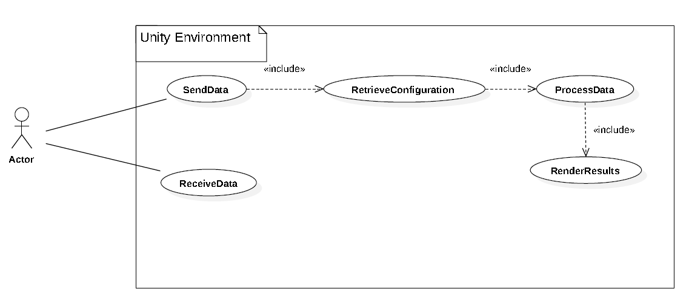
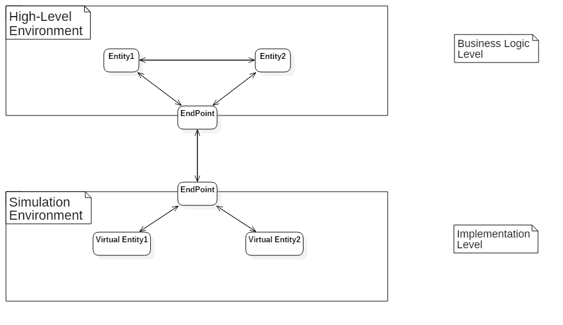

Requirement Analysis
By taking a simple look at the requirements, we can state that there are mainly two environments: the external one, which sends the data that has to be simulated and receives pieces of information concerning the virtual scenario, and the "internal" one (from our point of view) that is strictly connected to the Unity Engine. More precisely, within the QActors' context, the external environment is represented by a QActor that is basically the facade of the simulated one. In particular, it is possible to identify basically four main steps that can sum up the whole behaviour described in the Requirements section:- Data exchange: we take into account that data can be transmitted in both directions (send/receive).
- Retrieving actor's configuration: in order to correctly simulate our entities, it is necessary to define a link between the stream of symbols exchanged between the two environments and the desidered semantic interpretation of the latter.
- Data processing: takes as input the collected set of information by the net support.
- [Unity] Render results: since we want to simulate our actor's behaviours in a virtual scenario, the rendering task is entrusted to the Unity Engine.

Problem Analysis
From what concerns the previous use case scenario, we can highlight the fact that the entities that interact with the simulation framework are QActors. More precisely, for each QActor that wants to be simulated in the engine we will have its virtual counterpart. However, this does not mean that the interaction with the simulated world is allowed only to those entites that have a virtual alter-ego. This hypotesis coherently respects our Vision and Goal since the communication between actors should be independent from their own implementation, in accordance with a heterogeneous and distributed view of the system.Abstraction Gap
At this point we have to reason upon the satisfiability of the requirements. In other terms: "do we have all the stuff and knowledge in order to correctly complete the given task?" Let's consider three major aspects about actors and simulation engines.- From the communication point of view, there exists one fundamental constraint that is the possibility to attribute two different types of semantic to payloads: a message or an event. Thus, we have to take into account the necessity to support these kind of semantics in order to coherently remain attached to the QActors' environment.
- Secondly, remaining within the communication dimension, we have also to consider the structure of the data that is incoming from the external environment, as well as sent by the internal one. This is very important since it determines the nature of the link between the syntactic and the semantic dimensions.
- The third factor is more theoretical and concerns the simulation engine choice. Before selecting one specific, we have to consider some properties that may even refer to our non-functional requirements like efficiency, performance and simulation realism. Briefly, the knowledge behind a simulation software surely determines the guideline of the development process and, as a result, the choice we take will affect the amount of work to do.
Environment
If we try to zoom out in order to see the whole system, it is possible to state the following aspect. In accordance to the Goal section, the focus of this project is centered on the implementation layer of an entity, whose behaviour is described via a specific high-level language (i.e. QActor). Thus, we can distinguish two different layers.- High-level: describes the behaviour and interaction dimensions of an entity, independently of the underlying implementation.
- Implementation: characterized by specific techinical choices that determine how the high-level entity description is concretized. In particular, in this project we aim to define a specific implementation layer atop the Unity simulation environment.
The below image tries to summarize what has been said. Moreover, it is important to underline that each layer is completely independent from the other. The coupling is entirely bestowed on the Endpoint entities, which aim is to define a black box like structure for both layers.
